Dragontail Peak Triple Couloirs
Dragontail Peak
Triple Couloirs
April 5-6, 2003
Aidan, Chris K., Steve and myself drove to Leaventown for a worthy goal - The Classic Triple Couloirs!! Long had we sat enraptured at the feet of our betters, listening to their tales of adventure on this fabled climb. Now we would test our mettle on the not-so-lonely mountain. We parked next to a friend’s car at the Bridge Creek Campground, girding ourselves for the long (4 miles?) walk to the trailhead.
Aidan was on skis, and the rest of us carried snowshoes uselessly all the way to the river below the lake. I ditched mine boldly, secretly hoping that no one else would (just in case). But 6 snowshoes soon nestled quietly together with a rather smug pair of skis who knew they would at least be useful on 3 miles of downhill road.
We told a lot of jokes and stuff, but the best was shortly before the lake, when Chris started scream-singing a racy ode to Dragontail. I can’t repeat it here, but it was rather bracing. It combined his stark eastern-european sensibilities with earthy hip-hop stylings.
We got our view of the mountain at the lake. “Whoa, that was close,” I said as I turned around and hiked away.
We set up our tent next to Colin’s. He was boiling water and muttering about peanut butter and jelly, and the appropriate time to ingest it. He told some awful jokes, but everything is funny when you are chilled and far from home. We slowly settled in for the night, carrying out our snow camping chores like old timers. I really admired Colin’s tent. It’s a single wall tent, and as I fell asleep I imagined boiling my last packet of ramen in it, some Alaskan storm whinging away outside.
It snowed about two inches during the night, pretty heavily until about 1 am. We left the tent at 6:30 am, all very excited to be starting the climb.
I kicked steps up to the cone below the hidden couloir, then we hugged the left rock wall as we traversed into the couloir proper. This was an exciting way to start the climb, because we were crossing a narrow band of snow above a cliff. Once above that, we put Chris in the lead to kick steps for a while. The snow was fairly deep, but compacted well. Time passed, and we climbed happily, eager to see around a bend in the imposing walls that hemmed us in. We reached what we decided were the access gullies to reach the second couloir. We stomped out a platform to belay from and got the ropes out. Chris wore his enormous down jacket as he geared up to climb a pitch up the ice gully. He and Steve would climb on a rope, and Aidan and I would climb just behind. Without a down jacket I was eager to keep moving, so the long belay ledge sessions tended to bring out the worst in me (which is my singing for warmth). In a quavering, tremelous voice I sang “ The Thing That Should Not Be,” one of my favorite songs of all time.
Chris found a belay from pitons, and Steve started up with me on his heels. I tried to hang back and focus on the fun climbing. We climbed a shallow gully with frozen snow and ice of 60 degrees. The axe placements were solid and easy to make. While Steve and Chris fussed with a piton belay, I brought Aidan up from ice screws. The sun was beginning to poke holes in the thick, gray clouds over the lake. I took a picture of Aidan in the gully, and sipped the rich wine of exposure and commitment. For some reason, I always relax when the climbing really begins. The long hike in, the melting of snow to drink, the restless sleep each harbor vague obstacles that I’m sure will derail our train to real climbing. Now I could forget about that.
Aidan noticed some rap slings as he climbed by. He always finds or remembers things others overlook. As Chris started up, Aidan chopped a ledge that I could put my right foot on. Pitch two was more challenging, going around a short cliff on thin ice over dark rock slabs. Chris didn’t find any pro near there, but climbed confidently on the dicey terrain.
While the three of us waited, Colin appeared in the couloir below. Soon he climbed part-way up to us and chatted for a few minutes. Aidan was especially happy to see his cousin. After a few traded insults, Colin decided to try a way to the right of our line up a narrow ice gully. We watched him climb away, really impressed by his skill.
Chris had been climbing a long time, and though the views of the lake and valley below were enchanting, I began to get impatient. Rather than another bout of singing, I decided to climb away carefully. I believed that whatever trouble Chris was having, I could avoid it somehow by belaying earlier. Very soon, the climbing became awkward and hard, as it took all my concentration to deal with the thin tool placements that would shatter if I applied too much pressure. I traversed more thin ice up and right, where I placed a picket and an ice screw. I was able to see Chris, and noticed that he was still climbing. I told Steve, who said “I don’t like to hear that!” He was muscling his way up the ice step, concentrating hard. All of us would like a belay on the thin ice section, so I resolved to somehow find one. By the scraped away snow on a rock outcrop, I saw where Chris had searched in vain for a piton placement. I climbed a little higher past another ice step to snow, and made a decent picket and axe belay. Steve continued past to a water ice step.
I belayed Aidan from this even wilder position on the face. He found the pitch to be really exciting, even nervewracking. We definitely felt the seriousness of the climb in this area. Chunks of snow and ice fell on us now and then, and it started to snow lightly. The next pitch provided the “heart” of the ice climbing on the face that day. To save time, Steve left an ice screw at the base of the V-shaped gully. I clipped it and started up, enjoying the steepening ice and the views beneath my feet. Fifteen feet above the screw I placed another one to protect a bulge with two possible exits. I was glad I did, because the ice became thinner and steeper. I started left on thin ice over rock, then reached high for a tool placement only to find loose powder snow. Easing rightward, I bashed at marginal ice for something that would stick. My focus narrowed intensely and I kept working at it, making upward moves once I found solid placements for my tools. I marvelled at the difficulty – it felt harder than anything I’d climbed before (a gaggle of WI3 pitches). Carefully topping out, I moved away from the void on increasingly deep snow that marked the entrance to the second couloir. I placed a picket, then saw Steve and Chris 100 feet above at a rock belay on the right edge of the couloir. I had promised Aidan a belay on the pitch, so I stopped after another 50 feet to build a picket and axe belay in the growing snowstorm.
Shades of gray and white surrounded us. Steve led off above Chris, kicking steps in the couloir that were quickly filled with snow. The next hour provided an exhausting spindrift tutorial. As I belayed Aidan, insistent streams of powder snow made channels in the gully around me. This couloir “drains” large areas of rock which shed their fresh snow eagerly in a thousand complex paths. Twenty feet above, Chris endured a comedy of errors when one of these paths opened and began covering him in clouds of snow while he struggled to remove pitons. I had to laugh because the rock on either side of him was free of this problem. Meanwhile Aidan appeared, shouting that he’d nearly drowned twice in great releases of drift that almost knocked him off the ice. I really wanted to get moving at that point! Aidan climbed quickly past me to Chris, and I coiled half the rope over my shoulder. I had to keep re-creating my ledge in the snow as the rivers of spindrift turned into a general rout. Finally I could climb!
In my lonely world, my only companion was Aidan who occasionally glanced down sympathetically. I had aquired the prejudice that my struggles were harder than everyone else’s. Later I found out that even though Aidan was right behind Chris, the steps still disappeared for him in the churning mass of drift. Deep snow always makes me want to be somewhere else, like maybe vomiting into a dumpster behind a Jack in the Box in suburban Tucson.
Finally we got above the worst of the funnels, and chopped out a ledge so Steve could belay Chris on a pitch up to the Third Couloir. It stopped snowing, and we drank some water and talked for a while. Soon Chris and Steve were gone, and Aidan began leading this pitch which climbed pleasantly up a shallow slot of ice and snow. Aidan brought me up to a fantastic location beside a tower that marked the start of the Third Couloir. I was flabbergasted by the view, having grown institutionalized by the narrow confines of the lower and middle face. We shortened the ropes, and placed snow pickets as we climbed. Steve and I climbed together for a while. Clouds and sun chased each other on the lake below, and a “Tower of Adamant” stretched for the sky.
Aidan was feeling really strong, so he came to kick steps the rest of the way. Before I knew it, he was practically pulling me up on the rope. We reached the ridgetop, and got amazing views of the Enchantments. It felt good to crawl out of the north face and get some sun. After Steve and Chris arrived, Aidan led us to the summit about 10 minutes away, where we all kissed the summit rock with great passion. It was 5:30 pm, so we spend 11 hours on the climb. I could see Pandora’s Box a quarter mile away, where Chris and I stopped on a previous trip. Chris discovered he had a broken crampon point.
In fact, since he is moving away, all of his gear is chosing this moment to fall to pieces. His ski pole had become a gnarled stick, without even a basket at the end or a hand strap.
We hiked down snowfields and made a long traverse to reach Aasgard Pass. The evening light on Colchuck Balanced Rock was beautiful. Variable icy or soft snow made the hike down to the lake take a while. Chris had dropped sunglasses on the climb, so he went the base to look for them, while Aidan went ahead and began taking down the tent. While I packed, he then melted snow for some warm drinks. It took about an hour to get camp packed up, and the sun set as we hiked across the frozen lake. Just seven miles to go through the snowy forest now!
After a river crossing, we split into two groups, with Aidan and Chris zooming ahead while Steve and I hiked more slowly. We felt pretty good on the trail, but fell to cursing on the snow-covered road walk. Once you develop a good rythym of walking a step in the snow collapses, sending you flying forward with a big pack. You have to laugh at the ridiculous situation!
As the agony of boredom and fatigue grew unbearable, we sped our pace considerably, walking the last mile in a fury of limbs. We waited for 10 minutes for Chris and Aidan to return with Steve’s car, as they had gone to make a phone call. Aidan hoped that “der Safeweg” would be open, but it wasn’t. We managed to extract a few “Safeway Select” drinks from the vending machine outside, as we were desperate, and even the 76 station was closed. Everyone thought about what he would eat when we reached civilization, but we were also tired enough that elaborate preperations (like toasting bread) would have sent us shuffling off to sleep. Mark and Nancy allowed Aidan to stay at my house that night and get to school late. That allowed Steve to stay until morning too. We lucked out and found a 24 hour Jack in the Box, where everyone but Chris indulged in wonderful junk food.
</td>
<td width=”30%” valign=top>
|
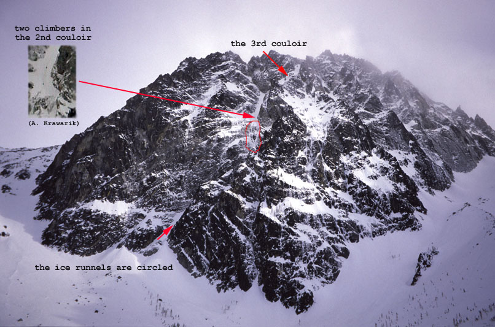 Dragontail Peak. The Triple Couloirs start left of center and trend rightward. |
|
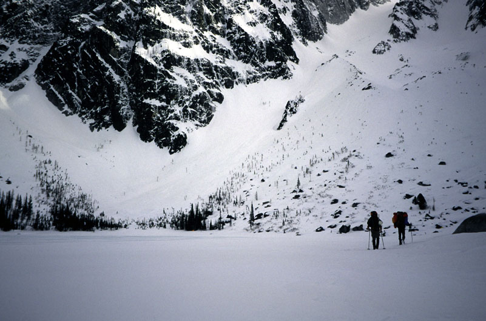 Frozen Colchuck Lake and the mountain, with Steve and Chris. |
|
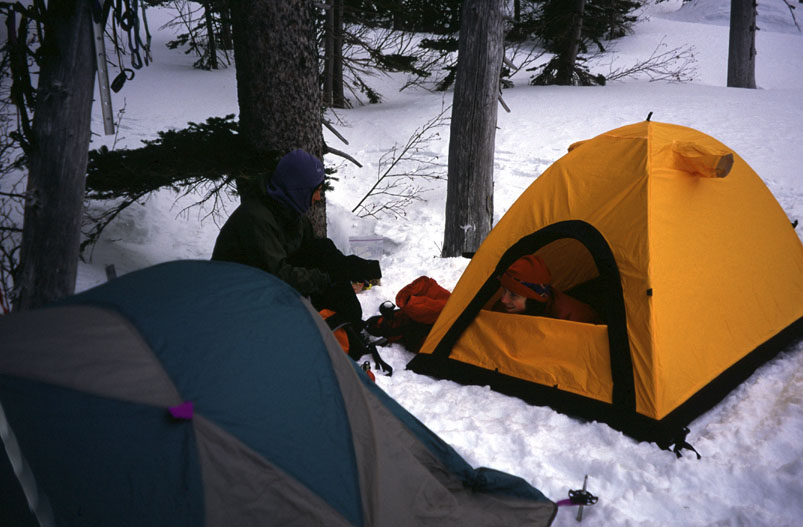 Aidan and Colin discussing sandwiches on the internet. |
|
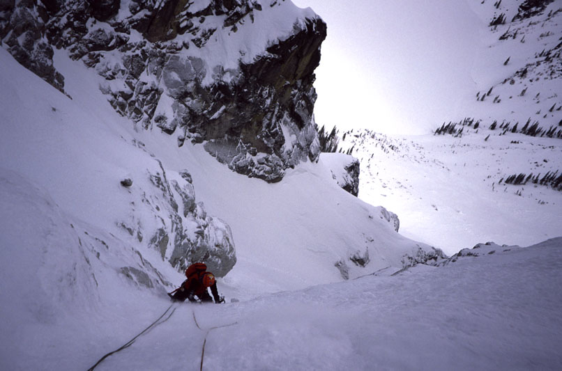 Aidan on the first ice/neve pitch. |
|
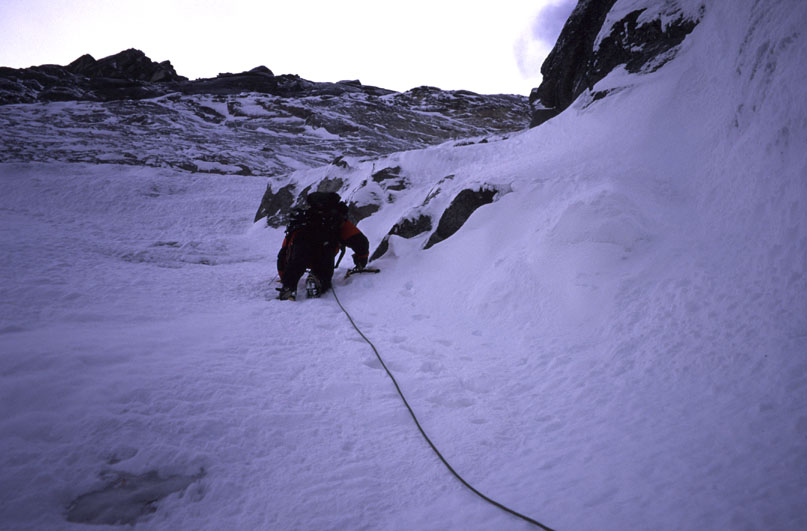 Chris starting up pitch two on thin ice under snow. |
|
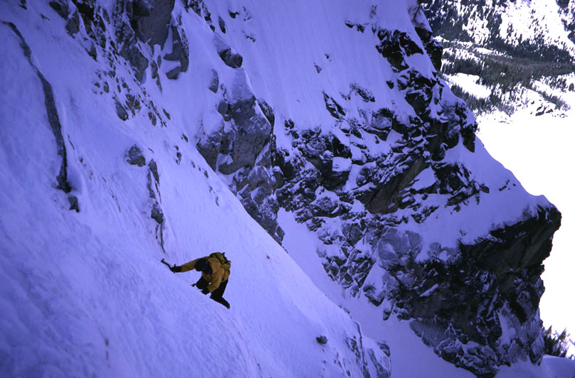 Colin soloing the ice runnels. |
|
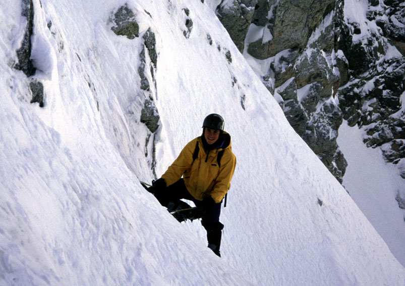 Colin stops for a second. |
|
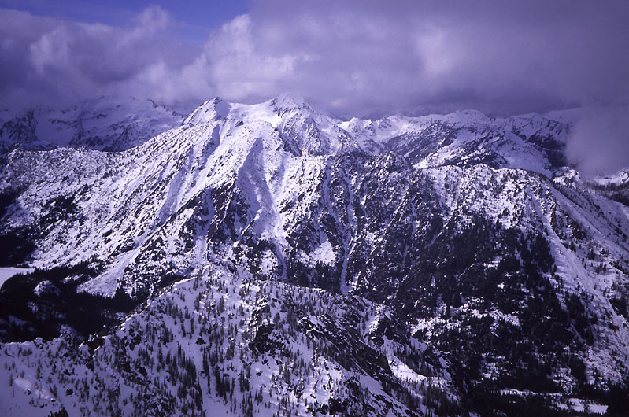 A brief view before the snowstorm. |
|
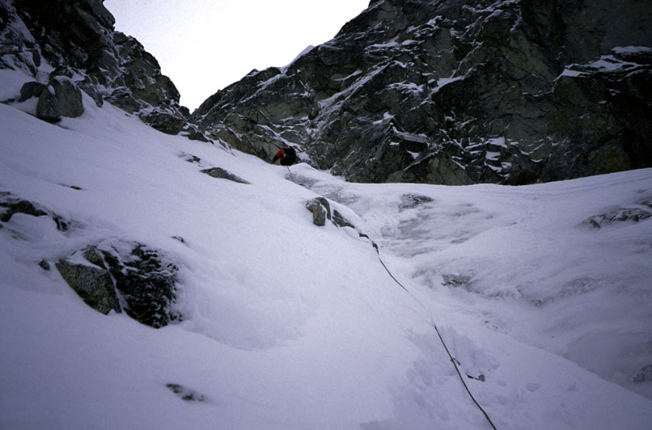 At the top of the Second Couloir. |
|
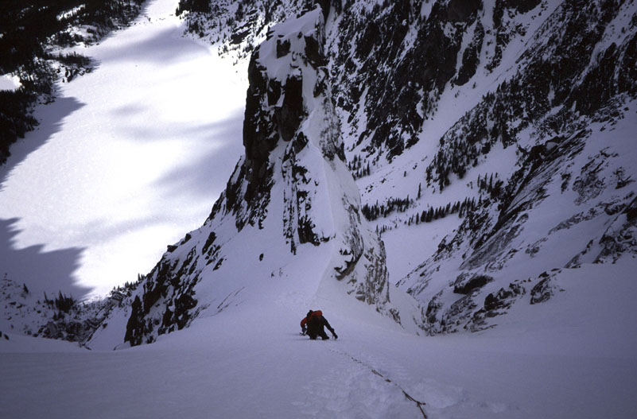 Aidan and Chris in the Third Couloir. |
|
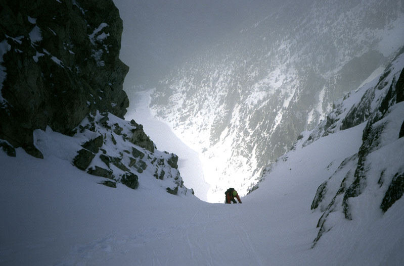 Chris approaching the ridge near the summit. |
|
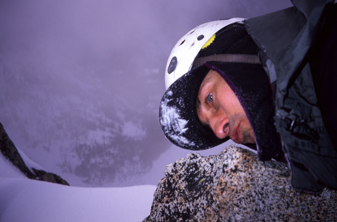 Steve kissing the blarney stone on the summit. |
|
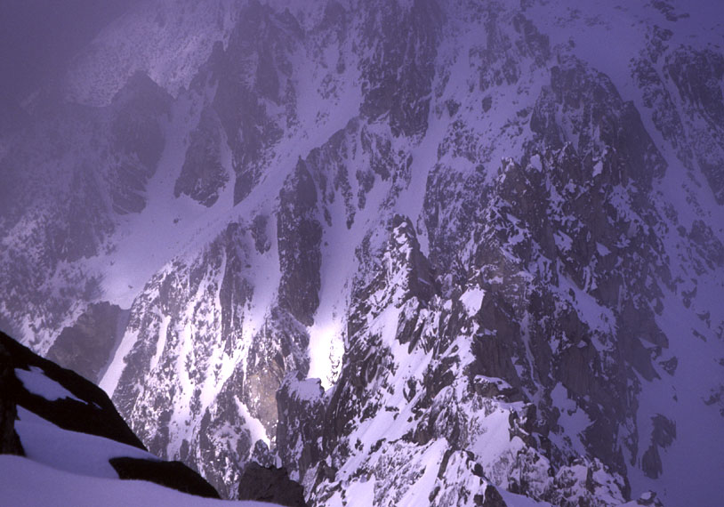 A view of wild peaks from the summit. |
|
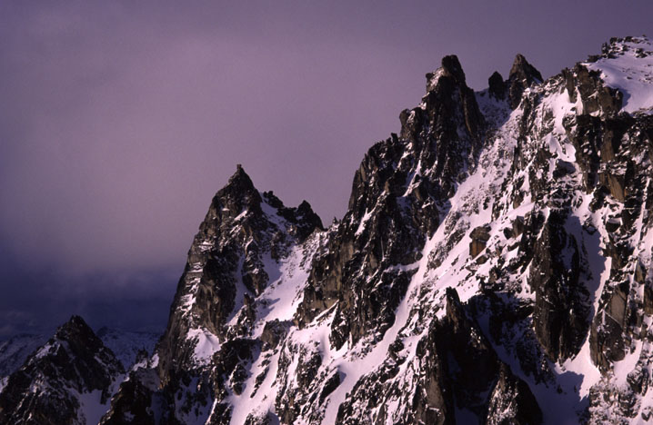 Colchuck Balanced Rock in evening light. |
{kind=link}
{kind=link}
{kind=link}
{kind=link}
{kind=link}
{kind=link}
{kind=link}
{kind=link}
{kind=link}
{kind=link}
{kind=link}
{kind=link}
{kind=link}
{kind=link}